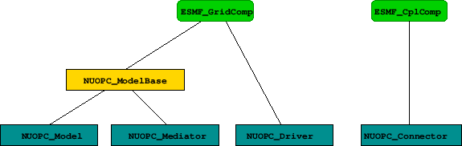
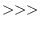
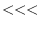

Next: 3 API Up: NUOPC_refdoc Previous: 1 Description Contents
The NUOPC Layer is implemented in Fortran on top of the public ESMF Fortran API.
The NUOPC utility routines form a very straightforward Fortran API, accessible through the NUOPC Fortran module. The interfaces only use native Fortran types and public ESMF derived types. In order to access the utility API of the NUOPC Layer, user code must include the following two use lines:
use ESMF use NUOPC
The NUOPC generic components are implemented as a collection of Fortran modules. Each module implements a single, well specified set of standard ESMF_GridComp or ESMF_CplComp methods. The nomenclature of the generic component modules starts with the NUOPC_ prefix and continues with the kind: Driver, Model, Mediator, or Connector. The four kinds of generic components implemented by the NUOPC Layer are:
The user code accesses the desired generic component(s) by including a use line for each one. Each generic component defines a small set of public names that are made available to the user code through the use statement. At a minimum the SetServices method is made public. Some of the generic components define additional public routines and labels as part of their user interface. It is recommended to rename entries of an imported generic component module, such as SetServices, in the local scope as part of the use association to prevent potential name clashes.
use NUOPC_<GenericComp>, &
<GenericComp>SS => SetServices
A generic component is used by user code to implement a specialized version of the generic component. The user component derives from the generic component code by implementing its own public SetServices routine that calls into the generic SetServices routine via the NUOPC_CompDerive() method. Typically this should be the first call made before doing anything else. It is through this mechanism that the deriving component inherits functionality that is implemented in the generic component. The example below shows how a specific model component is implemented, deriving from the generic NUOPC_Model:
use NUOPC_Model, &
modelSS => SetServices
subroutine SetServices(model, rc)
type(ESMF_GridComp) :: model
integer, intent(out) :: rc
! derive from NUOPC_Model
call NUOPC_CompDerive(model, modelSS, rc=rc)
! specialize model
!... calls to NUOPC_CompSpecialize() here
end subroutine
After the call to NUOPC_CompDerive() in a component's SetServices() method, the component is connected to all of the generic code provided by NUOPC for the respective component kind. In order to function properly, e.g. as an atmosphere model, ocean model, driver, etc., the component must be specialized.
The NUOPC_CompSpecialize() method is used to link specific user provided routines to pre-defined NUOPC specialization points. The labels of the pre-defined specialization points are use associated named constants made available by the respective generic component module. The naming of all pre-defined specialization labels starts with the label_ prefix, and is followed by a short intent of the specialization. E.g. label_Advertise refers to the specialization point responsible for advertising Fields in the import- and exportStates of the component.
Lists of all the pre-defined specialization labels for each of the generic NUOPC component kinds are provided at the beginning of the respective API sections.
The following code snippet shows a full specialization of NUOPC_Model, using three specialization labels:
use NUOPC_Model, &
modelSS => SetServices
subroutine SetServices(model, rc)
type(ESMF_GridComp) :: model
integer, intent(out) :: rc
rc = ESMF_SUCCESS
! derive from NUOPC_Model
call NUOPC_CompDerive(model, modelSS, rc=rc)
if (ESMF_LogFoundError(rcToCheck=rc, msg=ESMF_LOGERR_PASSTHRU, &
line=__LINE__, &
file=__FILE__)) &
return ! bail out
! specialize model
call NUOPC_CompSpecialize(model, specLabel=label_Advertise, &
specRoutine=Advertise, rc=rc)
if (ESMF_LogFoundError(rcToCheck=rc, msg=ESMF_LOGERR_PASSTHRU, &
line=__LINE__, &
file=__FILE__)) &
return ! bail out
call NUOPC_CompSpecialize(model, specLabel=label_RealizeProvided, &
specRoutine=Realize, rc=rc)
if (ESMF_LogFoundError(rcToCheck=rc, msg=ESMF_LOGERR_PASSTHRU, &
line=__LINE__, &
file=__FILE__)) &
return ! bail out
call NUOPC_CompSpecialize(model, specLabel=label_Advance, &
specRoutine=Advance, rc=rc)
if (ESMF_LogFoundError(rcToCheck=rc, msg=ESMF_LOGERR_PASSTHRU, &
line=__LINE__, &
file=__FILE__)) &
return ! bail out
end subroutine
The user implemented specialization routines must follow the NUOPC interface definition.
subroutine SpecRoutine(comp, rc)
type(ESMF_*Comp) :: comp
integer, intent(out) :: rc
end subroutine
Here type(ESMF_*Comp) either corresponds to type(ESMF_GridComp) for Models, Mediators, and Drivers, or type(ESMF_CplComp) for Connectors.
Components that are derived from a generic component may choose to only specialize certain aspects, leaving other aspects unspecified. This allows a hierarchy of generic components to be implemented with a high degree of code re-use. The variable level of specialization supports the very differing user needs. Figure 1 depicts the inheritance structure of the standard generic components implemented by the NUOPC Layer. There are two trees, one is rooted in ESMF_GridComp, while the other is rooted in ESMF_CplComp.
|
 |
The NUOPC Layer uses standard metadata on Fields to guide the decision making process that is implemented in generic code. The generic NUOPC_Connector component, for instance, uses the StandardName Attribute to construct a list of matching Fields between the import and export States. The NUOPC Field Dictionary provides a software implementation of a controlled vocabulary for the StandardName Field Attribute. It also associates each registered StandardName with CanonicalUnits. Currently the NUOPC Layer uses the CanonicalUnits entry to verify that Fields are provided in their canonical units. In the future, this entry may help support automatic unit conversion among exchanged fields.
The NUOPC Field Dictionary is set up by loading its content from a YAML 1.2 file. See section 2.2.1 for details.
Users can extend the dictionary by adding entries (field definitions or synonyms) to the YAML file, or by calling the NUOPC_FieldDictionaryAddEntry() interface.
In a given NUOPC application, the NUOPC Field Dictionary can be set up by calling the NUOPC_FieldDictionarySetup() method to read in a properly-formatted YAML file. This feature is intended to improve the interoperability of codes that use the NUOPC Layer, as it allows a broader scientific community to contribute to the growth and upkeep of a common NUOPC Field Dictionary file shared among different Earth System Models. At this time, an initial version of the NUOPC Field Dictionary file is available through the dedicated GitHub repository: https://github.com/ESCOMP/NUOPCFieldDictionary, hosted within the Earth System Community Modeling Portal (ESCOMP).
A NUOPC Field Dictionary YAML file is codified as a YAML map (an unordered association of unique keys to values) with only one key: field_dictionary. The value associated with this key is itself a YAML map that should include the mandatory key entries (pointing to the complete set of dictionary entries), and may include the optional keys: version_number, last_modified, institution, contact, source, and description. These optional keys are intended to hold information about the file itself and are currently ignored by the NUOPC Layer.
Entries in the NUOPC Field dictionary are organized as YAML lists of maps. List items under the entries keyword must be indented and preceded with a hyphen (-).
A dictionary entry fully defines a Field if it includes both the standard_name and canonical_units keys and their associated values. This entry may also include a brief narrative describing the Field, stored as the value of the optional key description.
Synonyms can be defined by adding separate entries that include both the alias key, associated with either a single synonym (YAML scalar, e.g. alias: <name>) or a comma-separated list of synonyms within square brackets (YAML flow sequence, e.g. alias: [<name1>, <name2>, ...]), and the standard_name key associated with the original Field name to be substituted. The original Field name must be fully defined in the dictionary file. While adding one alias keyword to a Field definition dictionary entry is allowed and will be parsed by the NUOPC Layer, it is recommended that all synonyms be included as separate entries.
A NUOPC Field dictionary sample file is included below.
field_dictionary:
version_number: 0.0.1
last_modified: 2018-03-14T11:01:19Z
institution: National ESPC, CSC & MCL Working Groups
contact: esmf_support@ucar.edu
source: https://github.com/ESCOMP/NUOPCFieldDictionary
description: Community-based dictionary for shared coupling fields
entries:
- standard_name: air_pressure
canonical_units: Pa
description: Air pressure
- standard_name: air_temperature
canonical_units: K
description:
Bulk temperature of the air,
not the surface (skin) temperature
- alias: p
standard_name: air_pressure
- alias: [ t, temp ]
standard_name: air_temperature
A version of the NUOPC Field Dictionary is preloaded by the NUOPC Layer at start-up, and, at this time, consists of the entries show in the table below. The value of the StandardName Attribute in each of these entries complies with the Climate and Forecast (CF) conventions guidelines.
| StandardName | CanonicalUnits |
| air_pressure_at_sea_level | Pa |
| magnitude_of_surface_downward_stress | Pa |
| precipitation_flux | kg m-2 s-1 |
| sea_surface_height_above_sea_level | m |
| sea_surface_salinity | 1e-3 |
| sea_surface_temperature | K |
| surface_downward_eastward_stress | Pa |
| surface_downward_heat_flux_in_air | W m-2 |
| surface_downward_northward_stress | Pa |
| surface_downward_water_flux | kg m-2 s-1 |
| surface_eastward_sea_water_velocity | m s-1 |
| surface_net_downward_longwave_flux | W m-2 |
| surface_net_downward_shortwave_flux | W m-2 |
| surface_northward_sea_water_velocity | m s-1 |
The NUOPC Layer makes extensive use of the ESMF Attribute class to implement metadata on Components, States, and Fields. ESMF Attribute Packages (or AttPacks for short) are used to build an Attribute hierarchy for each object.
In some cases the lowest level NUOPC AttPack contains a nested AttPack defined by ESMF. For all objects, the highest level of the NUOPC AttPack hierarchy is implemented with convention="NUOPC", purpose="Instance". The public NUOPC Layer API allows a user to add Attributes to the highest AttPack hierarchy level.
Note that some of the Attribute names in the following table are longer than the table column width. In these cases the Attribute name had to be broken into multiple lines. When that happens, a hyphen shows up to indicate the line break. The hyphen is not part of the Attribute name!
| Attribute name | Definition | Controlled vocabulary |
| Kind | String value indicating component kind. | Driver |
| Verbosity | String value, converted into an integer, and interpreted as a bit field. The lower 16 bits are reserved to control verbosity of the generic component implementation. Higher bits are available for user level verbosity control. bit 0: Intro/Extro of methods with indentation. bit 1: Intro/Extro with memory info. bit 2: Intro/Extro with garbage collection info. bit 3: Intro/Extro with local VM info. bit 8: Log Initialize phase with , , and currTime. bit 9: Log Run phase with , , and currTime. bit 10: Log Finalize phase with , , and currTime. bit 11: Log info about data dependency during initialize resolution. bit 12: Log run sequence execution. bit 13: Log Component creation. bit 14: Log State creation. |
0, 1, 2, ... "off" = 0 (default), "low": some verbosity, "high": more verbosity, "max": all lower 16 bits |
| Profiling | String value, converted into an integer, and interpreted as a bit field. The lower 16 bits are reserved to control profiling of the generic component implementation. Higher bits are available for user level profiling control. bit 0: Top level profiling of Initialize phases. bit 1: Specialization point profiling of Initialize phases. bit 2: Additional profiling of internals of Initialize phases. bit 3: Top level profiling of Run phases. bit 4: Specialization point profiling of Run phases. bit 5: Additional profiling of internals of Run phases. bit 6: Top level profiling of Finalize phases. bit 7: Specialization point profiling of Finalize phases. bit 8: Additional profiling of internals of Finalize phases. |
0, 1, 2, ... "off" = 0 (default), "low": Top level profiling. "high": Top level and specialization point profiling. "max": All lower 16 bits set. |
| CompLabel | String value holding the label under which the component was added to its parent driver. | no restriction |
| InitializePhaseMap | List of string values, mapping the logical NUOPC initialize phases, of a specific Initialize Phase Definition (IPD) version, to the actual ESMF initialize phase number under which the entry point is registered. | IPDvXXpY=Z, where XX = two-digit revision number, e.g. 01, Y = logical NUOPC phase number, Z = actual ESMF phase number, with Y, Z > 0 and Y, Z < 10 |
| RunPhaseMap | List of string values, mapping the logical NUOPC run phases to the actual ESMF run phase number under which the entry point is registered. | label-string=Z, where label-string can be chosen freely, and Z = actual ESMF phase number. |
| FinalizePhaseMap | List of string values, mapping the logical NUOPC finalize phases to the actual ESMF finalize phase number under which the entry point is registered. | label-string=Z, where label-string can be chosen freely, and Z = actual ESMF phase number. |
| InternalInitializePhaseMap | List of string values, mapping the logical NUOPC initialize phases, of a specific Initialize Phase Definition (IPD) version, to the actual ESMF initialize phase number under which the entry point is registered. | IPDvXXpY=Z, where XX = two-digit revision number, e.g. 01, Y = logical NUOPC phase number, Z = actual ESMF phase number, with Y, Z > 0 and Y, Z < 10 |
| NestingGeneration | Integer value enumerating nesting level. | 0, 1, 2, ... |
| Nestling | Integer value enumerating siblings within the same generation. | 0, 1, 2, ... |
| InitializeDataComplete | String value indicating whether all initialize data dependencies have been satisfied. | false, true |
| InitializeDataProgress | String value indicating whether progress is being made resolving initialize data dependencies. | false, true |
| HierarchyProtocol | String value specifying the hierarchy protocol. | "PushUpAllExportsAndUnsatisfiedImports" - activates field mirroring of all exports and unsatisfied imports. By default use reference sharing for the mirrored fields and geom objects. This is the default behavior without having HierarchyProtocol set. "ConnectProvidedFields"- no field mirroring, only connect to externally provided fields in the import- and exportStates. "Explorer" - like the default, but do not use reference sharing. All other values currently disable the hierarchy protocol. |
Note that some of the Attribute names in the following table are longer than the table column width. In these cases the Attribute name had to be broken into multiple lines. When that happens, a hyphen shows up to indicate the line break. The hyphen is not part of the Attribute name!
| Attribute name | Definition | Controlled vocabulary |
| Kind | String value indicating component kind. | Model |
| Verbosity | String value, converted into an integer, and interpreted as a bit field. The lower 16 bits are reserved to control verbosity of the generic component implementation. Higher bits are available for user level verbosity control. bit 0: Intro/Extro of methods with indentation. bit 1: Intro/Extro with memory info. bit 2: Intro/Extro with garbage collection info. bit 3: Intro/Extro with local VM info. bit 8: Log Initialize phase with , , and currTime. bit 9: Log Run phase with , , and currTime. bit 10: Log Finalize phase with , , and currTime. bit 11: Log info about data dependency during initialize resolution. bit 12: Log run sequence execution. bit 13: Log Component creation. bit 14: Log State creation. |
0, 1, 2, ... "off" = 0 (default), "low": some verbosity, "high": more verbosity, "max": all lower 16 bits |
| Profiling | String value, converted into an integer, and interpreted as a bit field. The lower 16 bits are reserved to control profiling of the generic component implementation. Higher bits are available for user level profiling control. bit 0: Top level profiling of Initialize phases. bit 1: Specialization point profiling of Initialize phases. bit 2: Additional profiling of internals of Initialize phases. bit 3: Top level profiling of Run phases. bit 4: Specialization point profiling of Run phases. bit 5: Additional profiling of internals of Run phases. bit 6: Top level profiling of Finalize phases. bit 7: Specialization point profiling of Finalize phases. bit 8: Additional profiling of internals of Finalize phases. |
0, 1, 2, ... "off" = 0 (default), "low": Top level profiling. "high": Top level and specialization point profiling. "max": All lower 16 bits set. |
| Diagnostic | String value, converted into an integer, and interpreted as a bit field. The lower 16 bits are reserved to control diagnostic of the generic component implementation. Higher bits are available for user level diagnostic control. bit 0: Dump fields of the importState on entering Initialize phases. bit 1: Dump fields of the exportState on entering Initialize phases. bit 2: Dump fields of the importState on exiting Initialize phases. bit 3: Dump fields of the exportState on exiting Initialize phases. bit 4: Dump fields of the importState on entering Run phases. bit 5: Dump fields of the exportState on entering Run phases. bit 6: Dump fields of the importState on exiting Run phases. bit 7: Dump fields of the exportState on exiting Run phases. bit 8: Dump fields of the importState on entering Finalize phases. bit 9: Dump fields of the exportState on entering Finalize phases. bit 10: Dump fields of the importState on exiting Finalize phases. bit 11: Dump fields of the exportState on exiting Finalize phases. |
0, 1, 2, ... "off" = 0 (default), "max": All lower 16 bits set. |
| CompLabel | String value holding the label under which the component was added to its parent driver. | no restriction |
| InitializePhaseMap | List of string values, mapping the logical NUOPC initialize phases, of a specific Initialize Phase Definition (IPD) version, to the actual ESMF initialize phase number under which the entry point is registered. | IPDvXXpY=Z, where XX = two-digit revision number, e.g. 01, Y = logical NUOPC phase number, Z = actual ESMF phase number, with Y, Z > 0 and Y, Z < 10 |
| RunPhaseMap | List of string values, mapping the logical NUOPC run phases to the actual ESMF run phase number under which the entry point is registered. | label-string=Z, where label-string can be chosen freely, and Z = actual ESMF phase number. |
| FinalizePhaseMap | List of string values, mapping the logical NUOPC finalize phases to the actual ESMF finalize phase number under which the entry point is registered. | label-string=Z, where label-string can be chosen freely, and Z = actual ESMF phase number. |
| InternalInitializePhaseMap | List of string values, mapping the logical NUOPC initialize phases, of a specific Initialize Phase Definition (IPD) version, to the actual ESMF initialize phase number under which the entry point is registered. | IPDvXXpY=Z, where XX = two-digit revision number, e.g. 01, Y = logical NUOPC phase number, Z = actual ESMF phase number, with Y, Z > 0 and Y, Z < 10 |
| NestingGeneration | Integer value enumerating nesting level. | 0, 1, 2, ... |
| Nestling | Integer value enumerating siblings within the same generation. | 0, 1, 2, ... |
| InitializeDataComplete | String value indicating whether all initialize data dependencies have been satisfied. | false, true |
| InitializeDataProgress | String value indicating whether progress is being made resolving initialize data dependencies. | false, true |
| HierarchyProtocol | String value specifying the hierarchy protocol. | "PushUpAllExportsAndUnsatisfiedImports" for field mirroring and connecting, "ConnectProvidedFields" to only connect provided fields (no mirroring), All other values currently disable the hierarchy protocol. |
Note that some of the Attribute names in the following table are longer than the table column width. In these cases the Attribute name had to be broken into multiple lines. When that happens, a hyphen shows up to indicate the line break. The hyphen is not part of the Attribute name!
| Attribute name | Definition | Controlled vocabulary |
| Kind | String value indicating component kind. | Mediator |
| Verbosity | String value, converted into an integer, and interpreted as a bit field. The lower 16 bits are reserved to control verbosity of the generic component implementation. Higher bits are available for user level verbosity control. bit 0: Intro/Extro of methods with indentation. bit 1: Intro/Extro with memory info. bit 2: Intro/Extro with garbage collection info. bit 3: Intro/Extro with local VM info. bit 8: Log Initialize phase with , , and currTime. bit 9: Log Run phase with , , and currTime. bit 10: Log Finalize phase with , , and currTime. bit 11: Log info about data dependency during initialize resolution. bit 12: Log run sequence execution. bit 13: Log Component creation. bit 14: Log State creation. |
0, 1, 2, ... "off" = 0 (default), "low": some verbosity, "high": more verbosity, "max": all lower 16 bits |
| Profiling | String value, converted into an integer, and interpreted as a bit field. The lower 16 bits are reserved to control profiling of the generic component implementation. Higher bits are available for user level profiling control. bit 0: Top level profiling of Initialize phases. bit 1: Specialization point profiling of Initialize phases. bit 2: Additional profiling of internals of Initialize phases. bit 3: Top level profiling of Run phases. bit 4: Specialization point profiling of Run phases. bit 5: Additional profiling of internals of Run phases. bit 6: Top level profiling of Finalize phases. bit 7: Specialization point profiling of Finalize phases. bit 8: Additional profiling of internals of Finalize phases. |
0, 1, 2, ... "off" = 0 (default), "low": Top level profiling. "high": Top level and specialization point profiling. "max": All lower 16 bits set. |
| Diagnostic | String value, converted into an integer, and interpreted as a bit field. The lower 16 bits are reserved to control diagnostic of the generic component implementation. Higher bits are available for user level diagnostic control. bit 0: Dump fields of the importState on entering Initialize phases. bit 1: Dump fields of the exportState on entering Initialize phases. bit 2: Dump fields of the importState on exiting Initialize phases. bit 3: Dump fields of the exportState on exiting Initialize phases. bit 4: Dump fields of the importState on entering Run phases. bit 5: Dump fields of the exportState on entering Run phases. bit 6: Dump fields of the importState on exiting Run phases. bit 7: Dump fields of the exportState on exiting Run phases. bit 8: Dump fields of the importState on entering Finalize phases. bit 9: Dump fields of the exportState on entering Finalize phases. bit 10: Dump fields of the importState on exiting Finalize phases. bit 11: Dump fields of the exportState on exiting Finalize phases. |
0, 1, 2, ... "off" = 0 (default), "max": All lower 16 bits set. |
| CompLabel | String value holding the label under which the component was added to its parent driver. | no restriction |
| InitializePhaseMap | List of string values, mapping the logical NUOPC initialize phases, of a specific Initialize Phase Definition (IPD) version, to the actual ESMF initialize phase number under which the entry point is registered. | IPDvXXpY=Z, where XX = two-digit revision number, e.g. 01, Y = logical NUOPC phase number, Z = actual ESMF phase number, with Y, Z > 0 and Y, Z < 10 |
| RunPhaseMap | List of string values, mapping the logical NUOPC run phases to the actual ESMF run phase number under which the entry point is registered. | label-string=Z, where label-string can be chosen freely, and Z = actual ESMF phase number. |
| FinalizePhaseMap | List of string values, mapping the logical NUOPC finalize phases to the actual ESMF finalize phase number under which the entry point is registered. | label-string=Z, where label-string can be chosen freely, and Z = actual ESMF phase number. |
| InternalInitializePhaseMap | List of string values, mapping the logical NUOPC initialize phases, of a specific Initialize Phase Definition (IPD) version, to the actual ESMF initialize phase number under which the entry point is registered. | IPDvXXpY=Z, where XX = two-digit revision number, e.g. 01, Y = logical NUOPC phase number, Z = actual ESMF phase number, with Y, Z > 0 and Y, Z < 10 |
| NestingGeneration | Integer value enumerating nesting level. | 0, 1, 2, ... |
| Nestling | Integer value enumerating siblings within the same generation. | 0, 1, 2, ... |
| InitializeDataComplete | String value indicating whether all initialize data dependencies have been satisfied. | false, true |
| InitializeDataProgress | String value indicating whether progress is being made resolving initialize data dependencies. | false, true |
| HierarchyProtocol | String value specifying the hierarchy protocol. | "PushUpAllExportsAndUnsatisfiedImports" for field mirroring and connecting, "ConnectProvidedFields" to only connect provided fields (no mirroring), All other values currently disable the hierarchy protocol. |
| Attribute name | Definition | Controlled vocabulary |
| Kind | String value indicating component kind. | Connector |
| Verbosity | String value, converted into an integer, and interpreted as a bit field. The lower 16 bits are reserved to control verbosity of the generic component implementation. Higher bits are available for user level verbosity control. bit 0: Intro/Extro of methods with indentation. bit 1: Intro/Extro with memory info. bit 2: Intro/Extro with garbage collection info. bit 3: Intro/Extro with local VM info. bit 8: Log FieldTransferPolicy. bit 9: Log bond level info. bit 10: Log CplList construction. bit 11: Log GeomObject Transfer. bit 12: Log looping over all elements in CplList for RouteHandle computation, FieldSharing, and Timestamp propagation. bit 13: Log Run phase with , , and currTime. bit 14: Log info about RouteHandle execution. bit 15: Log info about RouteHandle release. |
0, 1, 2, ... "off" = 0 (default), "low": Some verbosity. "high": More verbosity. "max": All lower 16 bits set. |
| Profiling | String value, converted into an integer, and interpreted as a bit field. The lower 16 bits are reserved to control profiling of the generic component implementation. Higher bits are available for user level profiling control. bit 0: Top level profiling of Initialize phases. bit 1: Specialization point profiling of Initialize phases. bit 2: Additional profiling of internals of Initialize phases. bit 3: Top level profiling of Run phases. bit 4: Specialization point profiling of Run phases. bit 5: Additional profiling of internals of Run phases. bit 6: Top level profiling of Finalize phases. bit 7: Specialization point profiling of Finalize phases. bit 8: Additional profiling of internals of Finalize phases. |
0, 1, 2, ... "off" = 0 (default), "low": Top level profiling. "high": Top level and specialization point profiling. "max": All lower 16 bits set. |
| Diagnostic | String value, converted into an integer, and interpreted as a bit field. The lower 16 bits are reserved to control diagnostic of the generic component implementation. Higher bits are available for user level diagnostic control. bit 0: Dump fields of the importState on entering Initialize phases. bit 1: Dump fields of the exportState on entering Initialize phases. bit 2: Dump fields of the importState on exiting Initialize phases. bit 3: Dump fields of the exportState on exiting Initialize phases. bit 4: Dump fields of the importState on entering Run phases. bit 5: Dump fields of the exportState on entering Run phases. bit 6: Dump fields of the importState on exiting Run phases. bit 7: Dump fields of the exportState on exiting Run phases. bit 8: Dump fields of the importState on entering Finalize phases. bit 9: Dump fields of the exportState on entering Finalize phases. bit 10: Dump fields of the importState on exiting Finalize phases. bit 11: Dump fields of the exportState on exiting Finalize phases. |
0, 1, 2, ... "off" = 0 (default), "max": All lower 16 bits set. |
| CompLabel | String value holding the label under which the component was added to its parent driver. | no restriction |
| InitializePhaseMap | List of string values, mapping the logical NUOPC initialize phases, of a specific Initialize Phase Definition (IPD) version, to the actual ESMF initialize phase number under which the entry point is registered. | IPDvXXpY=Z, where XX = two-digit revision number, e.g. 01, Y = logical NUOPC phase number, Z = actual ESMF phase number, with Y, Z > 0 and Y, Z < 10 |
| RunPhaseMap | List of string values, mapping the logical NUOPC run phases to the actual ESMF run phase number under which the entry point is registered. | label-string=Z, where label-string can be chosen freely, and Z = actual ESMF phase number. |
| FinalizePhaseMap | List of string values, mapping the logical NUOPC finalize phases to the actual ESMF finalize phase number under which the entry point is registered. | label-string=Z, where label-string can be chosen freely, and Z = actual ESMF phase number. |
| CplList | List of StandardNames of the connected Fields. Each StandardName entry may be followed by a colon separated list of connection options. The details are discussed in section 2.4.5 | Standard names as per field dictionary, followed by connection options defined in section 2.4.5. |
| CplSetList | List of coupling sets. Each coupling set is identified by a string value. | no restriction |
| ConnectionOptions | Connection options to be applied to all the fields in the CplList by default. | Connection options defined in section 2.4.5. |
| Attribute name | Definition | Controlled vocabulary |
| Namespace | String value holding the namespace of all the objects contained in the State. | no restriction |
| FieldTransferPolicy | String value indicating to Connector to transfer/mirror Fields. | transferNone,
transferAll |
| Attribute name | Definition | Controlled vocabulary |
| Connected | Connected status. | false, true |
| TimeStamp | Ten integer values representing ESMF Time object. | N/A |
| ProducerConnection | String value indicating whether the Field has been connected with a producer. | open, targeted,
connected |
| ConsumerConnection | String value indicating whether the Field has been connected with a consumer. | open, targeted,
connected |
| Updated | String value indicating updated status during initialization. | false, true |
| ProducerTransferOffer | String value indicating a producer component's ability to transfer information about the advertised Field, including its GeomObject. | will provide,
can provide, cannot provide |
| ProducerTransferAction | String value indicating the action a producer component is supposed to take with respect to transferring Field information, including its GeomObject. | provide, accept |
| ConsumerTransferOffer | String value indicating a consumer component's ability to transfer information about the advertised Field, including its GeomObject. | will provide,
can provide, cannot provide |
| ConsumerTransferAction | String value indicating the action a consumer component is supposed to take with respect to transferring Field information, including its GeomObject. | provide, accept |
| SharePolicyField | String value indicating a component's policy with respect to sharing the Field data allocation. | share,
not share |
| ShareStatusField | String value indicating the status with respect to sharing the underlying Field data allocation that was negotiated. | shared,
not shared |
| SharePolicyGeomObject | String value indicating a component's policy with respect to sharing the Grid or Mesh on which the advertised Field object is defined. | share,
not share |
| ShareStatusGeomObject | String value indicating the status with respect to sharing the underlying GeomObject that was negotiated. | shared,
not shared |
| UngriddedLBound | Integer value list. If present equals the ungriddedLBound of the provider field during a GeomObject transfer. | no restriction |
| UngriddedUBound | Integer value list. If present equals the ungriddedUBound of the provider field.during a GeomObject transfer. | no restriction |
| GridToFieldMap | Integer value list. If present equals the gridToFieldMap of the provider field.during a GeomObject transfer. | no restriction |
| ArbDimCount | Integer value. If present equals the arbDimCount of the provider field.during a GeomObject transfer. | no restriction |
| MinIndex | Integer value list. If present equals the minIndex (of tile 1) of the provider field.during a GeomObject transfer. | no restriction |
| MaxIndex | Integer value list. If present equals the maxIndex (of tile 1) of the provider field.during a GeomObject transfer. | no restriction |
| TypeKind | Integer value. If present equals the integer representation of typekind of the provider field.during a GeomObject transfer. | implementation dependent range |
| GeomLoc | Integer value. If present equals the integer representation of staggerloc (for Grid) or meshloc (for Mesh) of the provider field.during a GeomObject transfer. | implementation dependent range |
ESMF introduces the concept of standard component methods: Initialize, Run, and Finalize. ESMF further recognizes the need for being able to split each of the standard methods into multiple phases. On the ESMF level, phases are implemented by a simple integer phase index. The NUOPC layer adds an abstraction layer that allows phases to be referenced by label.
For complex scenarios, e.g. multiple versions of multi-stage initialize sequences, the use of an integer based phase index quickly becomes confusing. The NUOPC Layer addresses this issue by introducing three component level attributes: InitializePhaseMap, RunPhaseMap, and FinalizePhaseMap. These attributes map logical NUOPC phase labels to integer ESMF phase indices. A NUOPC compliant component fully documents its available phases through the phase maps.
Currently the NUOPC Layer leverages the InitializePhaseMap during the initialization loop that is implemented by the generic NUOPC_Driver. It looks for phase map entries according to the initialize phase definition outlined in section 2.4.2. The RunPhaseMap is used when setting up run sequences in the Driver. The NUOPC_DriverAddRunElement() takes the phaseLabel argument, and uses the RunPhaseMap attribute internally to translates the label into the corresponding ESMF phase index. The FinalizePhaseMap is currently not used within the NUOPC Layer.
Within NUOPC, components under a driver are also referenced by label. Every component is associated with a label when it is added to a driver through the NUOPC_DriverAddComp() call. Multiple instances of the same component can be added to a driver, provided each instance is given a unique label. Connectors between components are identified by providing the label of the source component and destination component.
The interaction between NUOPC compliant components during the initialization process is regulated by the Initialize Phase Definition or IPD. The IPDs are versioned, with a higher version number indicating backward compatibility with all previous versions.
There are two perspectives of looking at the IPD. From the driver perspective the IPD regulates the sequence in which it must call the different phases of the Initialize() routines of its child components. To this end the generic NUOPC_Driver component implements support for IPDs up to a version specified in the API documentation.
The other angle of looking at the IPD is from the driver's child components. From this perspective the IPD assigns specific meaning to each initialize phase. The child components of a driver can be divided into two groups with respect to the meaning the IPD assigns to each initialize phase. In one group are the model, mediator, and driver components, and in the other group are the connector components. Child components publish their available initialize phases through the InitializePhaseMap attribute.
The driver also calls into its own internal initialize methods. This allows the driver to participate in the initialization of its children in a structured fashion. The internal initialization phases of a driver are published via the InternalInitializePhaseMap attribute.
The following tables document the meaning of each initialization phase of the available IPD versions for the child components and for the driver component itself. The phases are listed in the same sequence in which the driver calls them.
| IPDv00 label | Component | Meaning |
| IPDv00p1 | driver-internal | unspecified by NUOPC |
| IPDv00p1 | models, mediators, drivers | Advertise their import and export Fields. |
| IPDv00p1 | connectors | Construct their CplList Attribute. |
| IPDv00p2 | driver-internal | unspecified by NUOPC |
| IPDv00p2 | models, mediators, drivers | Realize their import and export Fields. |
| IPDv00p2a | connectors | Set the Connected Attribute on each import and export Field according to the CplList Attribute. Reconcile the import and export States. |
| IPDv00p2b | connectors | Precompute the RouteHandle. |
| IPDv00p3 | driver-internal | unspecified by NUOPC |
| IPDv00p3 | models, mediators, drivers | Check for compatibility of their Fields' Connected status. |
| IPDv00p4 | driver-internal | unspecified by NUOPC |
| IPDv00p4 | models, mediators, drivers | Handle Field data initialization. Timestamp their export Fields. |
| IPDv01 label | Component | Meaning |
| IPDv01p1 | driver-internal | unspecified by NUOPC |
| IPDv01p1 | models, mediators, drivers | Advertise their import and export Fields. |
| IPDv01p1 | connectors | Construct their CplList Attribute. |
| IPDv01p2 | driver-internal | Modify the CplList Attributes on the Connectors. |
| IPDv01p2 | models, mediators, drivers | unspecified/unused by NUOPC |
| IPDv01p2 | connectors | Set the Connected Attribute on each import and export Field according to the CplList Attribute. |
| IPDv01p3 | driver-internal | unspecified by NUOPC |
| IPDv01p3 | models, mediators, drivers | Realize their "connected" import and export Fields. |
| IPDv01p3a | connectors | Reconcile the import and export States. |
| IPDv01p3b | connectors | Precompute the RouteHandle according to the CplList Attribute. |
| IPDv01p4 | driver-internal | unspecified by NUOPC |
| IPDv01p4 | models, mediators, drivers | Check for compatibility of their Fields' Connected status. |
| IPDv01p5 | driver-internal | unspecified by NUOPC |
| IPDv01p5 | models, mediators, drivers | Handle Field data initialization. Timestamp their export Fields. |
| IPDv02 label | Component | Meaning |
| IPDv02p1 | driver-internal | unspecified by NUOPC |
| IPDv02p1 | models, mediators, drivers | Advertise their import and export Fields. |
| IPDv02p1 | connectors | Construct their CplList Attribute. |
| IPDv02p2 | driver-internal | Modify the CplList Attributes on the Connectors. |
| IPDv02p2 | models, mediators, drivers | unspecified/unused by NUOPC |
| IPDv02p2 | connectors | Set the Connected Attribute on each import and export Field according to the CplList Attribute. |
| IPDv02p3 | driver-internal | unspecified by NUOPC |
| IPDv02p3 | models, mediators, drivers | Realize their "connected" import and export Fields. |
| IPDv02p3a | connectors | Reconcile the import and export States. |
| IPDv02p3b | connectors | Precompute the RouteHandle according to the CplList Attribute. |
| IPDv02p4 | driver-internal | unspecified by NUOPC |
| IPDv02p4 | models, mediators, drivers | Check for compatibility of their Fields' Connected status. |
| IPDv02p5 | driver-internal | unspecified by NUOPC |
| IPDv02p5 | models, mediators, drivers | Handle Field data initialization. Timestamp their export Fields. |
| A loop is entered over all those model, mediator, driver Components that use IPDv02 and have unsatisfied data dependencies, repeating the following two steps: | ||
| Run() | connectors | Loop over all Connectors that connect to the Component that is currently indexed by the outer loop. |
| IPDv02p5 | models, mediators, drivers | Handle Field data initialization. Timestamp their export Fields and set the Updated and InitializeDataComplete Attributes accordingly. |
| Repeat these two steps until all data dependencies have been statisfied, or a dead-lock situation is detected. | ||
| IPDv03 label | Component | Meaning |
| IPDv03p1 | driver-internal | unspecified by NUOPC |
| IPDv03p1 | models, mediators, drivers | Advertise their import and export Fields and set the TransferOfferGeomObject Attribute. |
| IPDv03p1 | connectors | Construct their CplList Attribute. |
| IPDv03p2 | driver-internal | Modify the CplList Attributes on the Connectors. |
| IPDv03p2 | models, mediators, drivers | unspecified/unused by NUOPC |
| IPDv03p2 | connectors | Set the Connected Attribute on each import and export Field according to the CplList Attribute. Set the TransferActionGeomObject Attribute. |
| IPDv03p3 | driver-internal | unspecified by NUOPC |
| IPDv03p3 | models, mediators, drivers | Realize their "connected" import and export Fields that have TransferActionGeomObject equal to "provide". |
| IPDv03p3 | connectors | Transfer the Grid/Mesh/LocStream objects (only DistGrid) for Field pairs that have a provider and an acceptor side. |
| IPDv03p4 | driver-internal | unspecified by NUOPC |
| IPDv03p4 | models, mediators, drivers | Optionally modify the decomposition and distribution information of the accepted Grid/Mesh/LocStream by replacing the DistGrid. |
| IPDv03p4 | connectors | Transfer the full Grid/Mesh/LocStream objects (with coordinates) for Field pairs that have a provider and an acceptor side. |
| IPDv03p5 | driver-internal | unspecified by NUOPC |
| IPDv03p5 | models, mediators, drivers | Realize all Fields that have TransferActionGeomObject equal to "accept" on the transferred Grid/Mesh/LocStream objects. |
| IPDv03p5a | connectors | Reconcile the import and export States. |
| IPDv03p5b | connectors | Precompute the RouteHandle according to the CplList Attribute. |
| IPDv03p6 | driver-internal | unspecified by NUOPC |
| IPDv03p6 | models, mediators, drivers | Check compatibility of their Fields' Connected status. |
| IPDv03p7 | driver-internal | unspecified by NUOPC |
| IPDv03p7 | models, mediators, drivers | Handle Field data initialization. Timestamp the export Fields. |
| A loop is entered over all those model, mediator, driver Components that use IPDv02 and have unsatisfied data dependencies, repeating the following two steps: | ||
| Run() | connectors | Loop over all Connectors that connect to the Component that is currently indexed by the outer loop. |
| IPDv03p7 | models, mediators, drivers | Handle Field data initialization. Time stamp the export Fields and set the Updated and InitializeDataComplete Attributes accordingly. |
| Repeat these two steps until all data dependencies have been statisfied, or a dead-lock situation is detected. | ||
| IPDv04 label | Component | Meaning |
| IPDv04p1 | driver-internal | unspecified by NUOPC |
| IPDv04p1 | models, mediators, drivers | Advertise their import and export Fields and set the TransferOfferGeomObject Attribute. |
| IPDv04p1a | connectors | Consider all connection possibilities for their CplList Attribute. |
| IPDv04p1b | connectors | Unambiguous construction of their CplList Attribute. |
| IPDv04p2 | driver-internal | Modify the CplList Attributes on the Connectors. |
| IPDv04p2 | models, mediators, drivers | unspecified/unused by NUOPC |
| IPDv04p2 | connectors | Set the Connected Attribute on each import and export Field according to the CplList Attribute. Set the TransferActionGeomObject Attribute. |
| IPDv04p3 | driver-internal | unspecified by NUOPC |
| IPDv04p3 | models, mediators, drivers | Realize their "connected" import and export Fields that have TransferActionGeomObject equal to "provide". |
| IPDv04p3 | connectors | Transfer the Grid/Mesh/LocStream objects (only DistGrid) for Field pairs that have a provider and an acceptor side. |
| IPDv04p4 | driver-internal | unspecified by NUOPC |
| IPDv04p4 | models, mediators, drivers | Optionally modify the decomposition and distribution information of the accepted Grid/Mesh/LocStream by replacing the DistGrid. |
| IPDv04p4 | connectors | Transfer the full Grid/Mesh/LocStream objects (with coordinates) for Field pairs that have a provider and an acceptor side. |
| IPDv04p5 | driver-internal | unspecified by NUOPC |
| IPDv04p5 | models, mediators, drivers | Realize all Fields that have TransferActionGeomObject equal to "accept" on the transferred Grid/Mesh/LocStream objects. |
| IPDv04p5a | connectors | Reconcile the import and export States. |
| IPDv04p5b | connectors | Precompute the RouteHandle according to the CplList Attribute. |
| IPDv04p6 | driver-internal | unspecified by NUOPC |
| IPDv04p6 | models, mediators, drivers | Check compatibility of their Fields' Connected status. |
| IPDv04p7 | driver-internal | unspecified by NUOPC |
| IPDv04p7 | models, mediators, drivers | Handle Field data initialization. Timestamp the export Fields. |
| A loop is entered over all those model, mediator, driver Components that use IPDv02 and have unsatisfied data dependencies, repeating the following two steps: | ||
| Run() | connectors | Loop over all Connectors that connect to the Component that is currently indexed by the outer loop. |
| IPDv04p7 | models, mediators, drivers | Handle Field data initialization. Time stamp the export Fields and set the Updated and InitializeDataComplete Attributes accordingly. |
| Repeat these two steps until all data dependencies have been statisfied, or a dead-lock situation is detected. | ||
| IPDv05 label | Component | Meaning |
| IPDv05p1 | driver-internal | Advertise import and export Fields and set the TransferOfferGeomObject Attribute. Optionally set FieldTransferPolicy Attribute on States. |
| IPDv05p1 | models, mediators, drivers | Advertise their import and export Fields and set the TransferOfferGeomObject Attribute. Optionally set FieldTransferPolicy Attribute on States. |
| IPDv05p1 | connectors | Consider FieldTransferPolicy Attribute on import and export States. Advertise Fields to be transferred. |
| IPDv05p2 | driver-internal | Optionally modify import and export States before connectors construct CplList Attribute. |
| IPDv05p2 | models, mediators, drivers | Optionally modify import and export States before connectors construct CplList Attribute. |
| IPDv05p2a | connectors | Consider all connection possibilities for their CplList Attribute. |
| IPDv05p2b | connectors | Unambiguous construction of their CplList Attribute. |
| IPDv05p3 | driver-internal | Modify the CplList Attributes on the Connectors. |
| IPDv05p3 | models, mediators, drivers | unspecified/unused by NUOPC |
| IPDv05p3 | connectors | Set the Connected Attribute on each import and export Field according to the CplList Attribute. Set the TransferActionGeomObject Attribute. |
| IPDv05p4 | driver-internal | Realize "connected" import and export Fields that have TransferActionGeomObject equal to "provide". |
| IPDv05p4 | models, mediators, drivers | Realize their "connected" import and export Fields that have TransferActionGeomObject equal to "provide". |
| IPDv05p4 | connectors | Transfer the Grid/Mesh/LocStream objects (only DistGrid) for Field pairs that have a provider and an acceptor side. |
| IPDv05p5 | driver-internal | Optionally modify the decomposition and distribution information of the accepted Grid/Mesh/LocStream by replacing the DistGrid. |
| IPDv05p5 | models, mediators, drivers | Optionally modify the decomposition and distribution information of the accepted Grid/Mesh/LocStream by replacing the DistGrid. |
| IPDv05p5 | connectors | Transfer the full Grid/Mesh/LocStream objects (with coordinates) for Field pairs that have a provider and an acceptor side. |
| IPDv05p6 | driver-internal | Realize all Fields that have TransferActionGeomObject equal to "accept" on the transferred Grid/Mesh/LocStream objects. |
| IPDv05p6 | models, mediators, drivers | Realize all Fields that have TransferActionGeomObject equal to "accept" on the transferred Grid/Mesh/LocStream objects. |
| IPDv05p6a | connectors | Reconcile the import and export States. |
| IPDv05p6b | connectors | Precompute the RouteHandle according to the CplList Attribute. |
| IPDv05p7 | driver-internal | unspecified by NUOPC |
| IPDv05p7 | models, mediators, drivers | Check compatibility of their Fields' Connected status. |
| IPDv05p8 | driver-internal | unspecified by NUOPC |
| IPDv05p8 | models, mediators, drivers | Handle Field data initialization. Timestamp the export Fields. |
| A loop is entered over all those model, mediator, driver Components that use IPDv02 and have unsatisfied data dependencies, repeating the following two steps: | ||
| Run() | connectors | Loop over all Connectors that connect to the Component that is currently indexed by the outer loop. |
| IPDv05p8 | models, mediators, drivers | Handle Field data initialization. Time stamp the export Fields and set the Updated and InitializeDataComplete Attributes accordingly. |
| Repeat these two steps until all data dependencies have been statisfied, or a dead-lock situation is detected. | ||
The NUOPC Model and Mediator components are required to advertise their import and export Fields with a standard set of Field metadata. This set includes the StandardName attribute. The NUOPC Layer implements a strategy of pairing advertised Fields that is based primarily on the StandardName of the Fields, and in more complex situations further utilizes the Namespace attribute on States.
Field pairing is accomplished as part of the initialization procedure and is a collective effort of the Driver and its child components: Models, Mediator, Connectors. The exact handshakes between these components is outlined as part of the Initialize Phase Definition in section 2.4.2.
The Connectors are the most active players when it comes to Field pairing. The end result of the process is where each Connector has a list of Fields that it connects between its importState and its exportState. Each connector keeps this list in its component level metadata as CplList attribute.
During the first stage of Field pairing, each Connector matches all of the Fields in its importState to all of the Fields in its exportState by looking at their StandardName attribute. For every match a bondLevel is calculated and stored in the Field on the export side, i.e. on the consumer side of the connection, in the Field's ConsumerConnection attribute. The larges found bondLevel is kept for each Field on the export side.
The bondLevel is a measure of how strong the pairing is considering the namespace rules explained in section 2.4.4. Without the use of namespaces the bondLevel for all Field pairs that match by their StandardName is equal to 1.
After the first stage, there may be umbiguous Field pairs present. Ambiguous Field pairs are those that map different producer Fields (i.e. Fields in the importState of a Connector) to the same consumer Field (i.e. a Field in the exportState of a Connector). While the NUOPC Layer support having multiple consumer Fields connected to a single producer Field, it does not support the opposite condition. The second stage of Field pairing is responsible for disambiguating Field pairs with the same consumer Field.
Field pair disambiguation is based on the bondLevel that was calculated and stored on the consumer side Field for each pair during the first stage. The disambiguation rule simply selects the connection with the highest bondLevel and discards all lesser connection to the same consumer side Field. However, if the highest bondLevel is not unique, i.e. there are multiple pairs with the same bondLevel, disambiguation is not possible and an error is returned to the Driver by the Connector that finds the ambiguity first.
Assuming that the disambiguation step was successful, each Connector holds a valid CplList attribute with entries that correspond to the Field pairs that it is responsible for. At this stage the Driver can still overwrite this attribute and implement custom pairs if that is desired.
Namespaces are used to control and fine-tune the disambiguation of Field pairs during the initialization. The general procedure of Field pairing and disambiguation is outlined in section 2.4.3, here the use of namespaces is described.
The NUOPC Layer implements namespaces through the Namespace attribute on ESMF_State objects. The value of this attribute is a simple character string. The NUOPC Layer automatically creates the import and export States of every Model and Mediator component that is added to a Driver. The Namespace attribute of these States is automatically set to the compLabel string that was provided during NUOPC_DriverAdd(). Doing this places every Field that is advertised through these States inside the component's unique namespace.
A secondary namespace can be added to a State using the NUOPC_StateNamespaceAdd() method. This creates a new State that is nested inside of an existing State, and sets the Namespace attribute of the new State. Fields that are advertised inside of such a nested State are in a namespace with two parts: NS1:NS2. Here NS1 is the preset namespace of the import or export State (equal to the compLabel), and NS2 is a freely chosen namespace string.
During Field pairing the namespace on each side of the connection is considered in the two part format NS1:NS2. The first part is equal to the compLabel of the corresponding component, and NS2 is either the namespace of a nested State, or empty if the Field is not inside a nested State. Using this format, the calculation of the bondLevel during Field pairing is governed by the following rules:
In practice then, a component that targets a specific other component with its advertised Fields would add a secondary namespace to its import or export State, and set that namespace to the compLabel of the targeted component. This increases the bondLevel for each pair from 1 to 2. An even higher bondLevel of 3 is achieved when both sides target each other by specifying the other component's compLabel through a secondary namespace.
In conclusion, namespaces can affect the bondLevel calculation for each pair, but they do not affect how pairs are constructed and disambiguated. In particular, the requirement for unambiguous Field pairs for each consumer Field remains unchanged, and it is an error condition if the highest bondLevel for a consumer Field does not correspond to a unique Field pair.
Once the field pairing discussed in the previous sections is completed, each Connector component holds an attribute by the name of CplList. The CplList is a list type attribute with as many entries as there are fields for which the Connector component is responsible for connecting. The first part of each of these entries is always the StandardName of the associated field. See section 2.2 for a discussion of the NUOPC field dictionary and standard names.
After the StandardName part, each CplList entry may optionally contain a string of connection options. Each Driver component has the chance as part of the internal IPDv04p2 phase (see 2.4.2) to modify the CplList attribute of all the Connectors that it drives.
The individual connection options are colon separated, leading to the following format for each CplList entry:
StandardName[:option1[:option2[: ...]]
The format of the options is:
OptionName=value1[=spec1][,value2[=spec2][, ...]]
OptionName and the value strings are case insensitive. There are single and multi-valued options as indicated in the table below. For single valued options only value1 is relevant. If the same option is listed multiple times, only the first occurrence will be used. If an option has a default value, it is indicated in the table. If a value requires additional specification via =spec then the specifications are listed in the table.
| OptionName | Definition | Type | Values |
| dstMaskValues | List of integer values that defines the mask values. | multi | List of integers. |
| dumpWeights | Enable or disable dumping of the interpolation weights into a file. | single | true, false(default) |
| extrapDistExponent | The exponent to raise the distance to when calculating weights for the nearest_idavg extrapolation method. | single | real(default 2.0) |
| extrapMethod | Fill in points not mapped by the regrid method. | single | none(default), nearest_idavg, nearest_stod, creep, creep_nrst_d |
| extrapNumLevels | The number of levels to output for the extrapolation methods that fill levels. When a method is used that requires this, then an error will be returned, if it is not specified. | single | integer |
| extrapNumSrcPnts | The number of source points to use for the extrapolation methods that use more than one source point. | single | integer(default 8) |
| ignoreDegenerate | Ignore degenerate cells when checking the input Grids or Meshes for errors. | single | true, false(default) |
| ignoreUnmatchedIndices | Ignore unmatched sequence indices when redistributing between source and destination index space. | single | true, false(default) |
| pipelineDepth | Maximum number of outstanding non-blocking communication calls during the parallel interpolation. Only relevant for cases where the automatic tuning procedure fails to find a setting that works well on a given hardware. | single | integer |
| poleMethod | Extrapolation method around the pole(s). | single | none(default), allavg, npntavg="integer indicating number of points" |
| remapMethod | Redistribution or interpolation to compute the regridding weights. | single | redist, bilinear(default), patch, nearest_stod, nearest_dtos, conserve |
| srcMaskValues | List of integer values that defines the mask values. | multi | List of integers. |
| srcTermProcessing | Number of terms in each partial sum of the interpolation to process on the source side. This setting impacts the bit-for-bit reproducibility of the parallel interpolation results between runs. The strictest bit-for-bit setting is achieved by setting the value to 1. | single | integer |
| termOrder | Order of the terms in each partial sum of the interpolation. This setting impacts the bit-for-bit reproducibility of the parallel interpolation results between runs. The strictest bit-for-bit setting is achieved by setting the value to srcseq. | single | free(default), srcseq, srcpet |
| unmappedAction | The action to take when unmapped destination elements are encountered. | single | ignore(default), error |
| zeroRegion | The region of destination elements set to zero before adding the result of the sparse matrix multiplication. The available options support total, selective, or no zeroing of destination elements. | single | total(default), select, empty |
For multi-model applications it is not uncommon that during start-up one or more components depends on data from one or more other components. These types of data-dependencies during initialize can become very complex very quickly. Finding the "correct" sequence to initialize all components for a complex dependency graph is not trivial. The NUOPC Layer deals with this issue by repeatedly looping over all components that indicate that their initialization has data dependencies on other components. The loop is finally exited when either all components have indicated completion of their initialization, or a dead-lock situation is being detected by the NUOPC Layer.
The data-dependency resolution loop is implemented as part of Initialize Phase Definition version 2 (IPDv02) as defined in section 2.4.2. Participating components communicate their current status to the NUOPC Layer via Field and Component metadata. Participants are those components that contain an IPDv02p5 assignment in their InitializePhaseMap Attribute according to sections 2.3.1, 2.3.2, 2.3.3, and 2.3.4.
Every time a component's IPDv02p5 initialization phase is called it is responsible for setting the InitializeDataComplete and InitializeDataProgress Attributes according to its current status before returning. For convenience, the NUOPC Layer provides a generic implementation of an IPDv02p5 phase initialize method for Models and Mediators (available as ESMF Initialize phase 5). This generic implementation takes care of setting the InitializeDataProgress Attribute automatically. It does so by inspecting the Updated Field Attribute (see section 2.3.6) on all the Fields in the component's exportState. The generic IPDv02p5 implementation must be specialized by attaching a method for specialization point label_DataInitialize. This specialization method is responsible for checking the Fields in the importState and for initializing any internal data structures and Fields in the exportState. Fields that are fully initialized in the exportState must be indicated by setting their Updated Attribute to "true". Once the component is fully initialized it must further set its InitializeDataComplete Attribute to "true" before returning.
During the execution of the data-dependency resolution loop the NUOPC Layer calls all of the Connectors to a Model/Mediator component before calling the component's IPDv02p5 method. Doing so ensures that all the currently available Fields are passed to the component before it tries to access them during IPDv02p5. Once a component has set its InitializeDataComplete Attribute to "true" it, and the Connectors to it, will no longer be called during the remainder of the resolution loop.
When all of the components with an IPDv02p5 initialization phase have set their InitializeDataComplete Attribute to "true", the NUOPC Layer successfully exits the data-dependency resolution loop. The loop is also interrupted before all InitializeDataComplete Attributes are set to "true" if a full cycle completes without any indicated progress. The NUOPC Layer flags this situation as a potential dead-lock and returns with error.
There are modeling scenarios where the need arises to transfer physical grid information from one component to another. One common situation is that of modeling systems that utilize Mediator components to implement the interactions between Model components. In these cases the Mediator often carries out computations on a Model's native grid and performs regridding to the grid of other Model components. It is both cumbersome and error prone to recreate the Model grid in the Mediator. The Initialize Phase Definition version 3 (IPDv03) and above, defined in section 2.4.2, support the transfer of ESMF_Grid, and ESMF_Mesh, and ESMF_LocStream objects between Model and/or Mediator components during initialization.
The NUOPC Layer transfer protocol for GeomObjects (i.e. ESMF Grids, Meshes, or LocStreams) is based on two Field attributes: TransferOfferGeomObject and TransferActionGeomObject. The TransferOfferGeomObject attribute is used by the Model and/or Mediator components to indicate for each Field their intent for the associated GeomObject. The predefined values of this attribute are: "will provide", "can provide", and "cannot provide". The TransferOfferGeomObject attribute must be set during IPDv03p1.
The generic Connector uses the intents from both sides and constructs a response according to the table below. The response is provided by the Connector during IPDv03p2 by setting the value of the TransferActionGeomObject attribute to either "provide" or "accept" on each Field. Fields indicating TransferActionGeomObject equal to "provide" must be realized on a Grid, Mesh, or LocStream object in the Model/Mediator initialize method for phase IPDv03p3.
Fields that hold "accept" for the value of the TransferActionGeomObject attribute require two additional negotiation steps. By IPDv03p4 the Model/Mediator component can access the transferred Grid/Mesh/LocStream on the Fields that have the "accept" value. However, only the DistGrid, i.e. the decomposition and distribution information of the Grid/Mesh/LocStream is available at this stage, not the full physical grid information such as the coordinates. At this stage the Model/Mediator may modify this information by replacing the DistGrid object in the Grid/Mesh/LocStream. The DistGrid that is set on the Grid/Mesh/LocStream objects when leaving the Model/Mediator phase IPDv03p4 will consequently be used by the generic Connector to fully transfer the Grid/Mesh/LocStream object. The fully transferred objects are available on the Fields with "accept" during Model/Mediator phase IPDv03p5, where they can be used to realize the respective Field objects. Realizing typically just requires the ESMF_FieldEmptyComplete() call to be made. At this point all Field objects are fully realized and the initialization process can proceed as usual.
The following table shows how the generic Connector sets the TransferActionGeomObject attribute on the Fields according to the incoming value of TransferOfferGeomObject.
| TransferOfferGeomObject Incoming side A | TransferOfferGeomObject Incoming side B | Outgoing setting by generic Connector |
| "will provide" | "will provide" | A:TransferActionGeomObject="provide" B:TransferActionGeomObject="provide" |
| "will provide" | "can provide" | A:TransferActionGeomObject="provide" B:TransferActionGeomObject="accept" |
| "will provide" | "cannot provide" | A:TransferActionGeomObject="provide" B:TransferActionGeomObject="accept" |
| "can provide" | "will provide" | A:TransferActionGeomObject="accept" B:TransferActionGeomObject="provide" |
| "can provide" | "can provide" | if (A is import side) then
A:TransferActionGeomObject="provide" B:TransferActionGeomObject="accept" if (B is import side) then A:TransferActionGeomObject="accept" B:TransferActionGeomObject="provide" |
| "can provide" | "cannot provide" | A:TransferActionGeomObject="provide" B:TransferActionGeomObject="accept" |
| "cannot provide" | "will provide" | A:TransferActionGeomObject="accept" B:TransferActionGeomObject="provide" |
| "cannot provide" | "can provide" | A:TransferActionGeomObject="accept" B:TransferActionGeomObject="provide" |
| "cannot provide" | "cannot provide" | Flagged as error! |
For coupling scenarios with a very high coupling frequency, or for situations where large data volumes are exchanged (e.g. 3D volumetric fields), it can be necessary for fields and geom objects (Grid, Mesh, and LocStreams) to share their data via references. Reference sharing greatly reduces the coupling cost compared to local or remote copies.
In the current implementation, in order for NUOPC components to be coupled via reference sharing, they must only have data defined (i.e. have DEs) on PETs that are part of both components. Further, the distribution of data across the PETs must be identical for both components. If these conditions are met, and both sides of the connection indicate that they are willing to participate in reference sharing, the NUOPC Connector will handle technical details. The Connector will provide fields to the components that reference the exact same data allocations in memory. Notice however that once reference sharing is active, the NUOPC Layer cannot protect against components violating the data access conventions. Specifically fields in the importState are not to be modified by the component. Reference sharing requires a higher level of "trust" between the components. NUOPC therefore requires that both sides of a connection agree to reference sharing.
A component uses the SharePolicyField and SharePolicyGeomObject attributes on each field to indicate whether it is willing to reference share the data of a field, and/or the geom object on which the field is built. A setting of share indicates a component's willingness to share, while not share indicates the opposite. The share policy attributes are automatically set when a field is advertised via the NUOPC_Advertise() method. By default this method sets both share policies to not share.
When a Connector negotiates the connections between two components, it first considers the transfer offer attributes (i.e. TransferOfferGeomObject) on both sides for each field to determine the TransferActionGeomObject attribute for both side. The details of this protocol are outline in section 2.4.7. There are two cases to consider for each field that are relevant for reference sharing:
The simple case is where the Connector determines that for a specific field both sides must provide the field and geom object. This is indicated by TransferActionGeomObject being set to provide on both sides. For this case the ShareStatusField and ShareStatusGeomObject attributes are automatically set to not shared for all the fields, preventing any reference sharing.
The more interesting case is where one side of the connection receives the TransferActionGeomObject on a field set to provide, while the other side receives accept. In this case, the next step is for the Connector to take the SharePolicyField and SharePolicyGeomObject attributes on both sides into consideration. For each of the two attributes separately, if one side indicates not share, both sides will receive the associated ShareStatus set to not shared. However, if both sides of the connection indicate a SharePolicy of share, the Connector must further inspect the petLists to see if reference sharing is possible for the specific field. Under the current implementation a field is sharable with another component if all the PETs on which the field holds DEs are also in the other component's petList. If this condition is not met for the specific field, then the associated ShareStatus is set to not shared. Otherwise the ShareStatus is set to shared
During later phases of the Initialization protocol the Connector performs different operations, depending on how the TransferActionGeomObject, ShareStatusField, and ShareStatusGeomObject attributes were set as per the above protocol:
In some cases it is helpful for a NUOPC component to automatically mirror or match the set of fields advertised in another component. One purpose of this is to automatically resolve the import data dependencies of a component, by setting up a component that exactly provides all of the needed fields. This is currently used in the NUOPC Component Explorer: when driving a child NUOPC Model with required import fields, the Component Explorer uses the field mirroring capability to advertise in the driver-self export State the exact set of fields advertised in the child NUOPC Model. This ensures that the entire Initialize Phase Sequence will complete (because all dependencies are satisfied) and all phases can be exercised by the Component Explorer.
The field mirror capability is also useful with NUOPC Mediators since these components often exactly reflect, in separate States, the sets of fields of each of the connected components. The field mirroring capability, therefore, can be used to ensure that a Mediator is always capable of accepting fields from connected components, and removes the need to specify field lists in multiple places, i.e., both within a set of Model components connected to a Mediator and within the Mediator itself.
The field mirror capability is supported in the Initialize Phase Definition version 5 (IPDv05) and higher, defined in section 2.4.2. During IPDv05p1, driver-self, models, mediators, and drivers advertise fields in their import and export States. At this point, these components can also optionally set the FieldTransferPolicy Attribute in their import and export States. The default value "TransferNone" indicates that no fields should be mirrored. The other option, "TransferAll", indicates that fields should be mirrored in the State of a connected component.
During IPDv05p1, each Connector consider the FieldTransferPolicy Attribute on both its import and export States. If both States have a FieldTransferPolicy of "TransferAll", then fields are transferred between the States in both directions (i.e., import to export and export to import). The transfer process works as follows: First, the TransferOfferGoemObject attribute is reversed between the providing side and accepting side. Intuitively, if a field from the providing component is to be mirrored and it can provide its own geometric object, then the mirrored field on the accepting side should be set to accept a geometric object. Then, the field to be mirrored is advertised in the accepting State using a call to NUOPC_Advertise() such that the mirrored field shares the same Standard Name.
At this point the Initialization Sequence continues as usual. Since fields to be mirrored have been advertised with matching Standard Names, the field pairing algorithm will now match them in the usual way thereby establishing a connection between the original and mirrored fields.
The NUOPC Layer associates an internal clock with three of its four generic component kinds: NUOPC_Driver, NUOPC_Model, and NUOPC_Mediator. The NUOPC_Connector is the only NUOPC component kind that does not have an internal clock object that is managed by NUOPC.
The component internal clocks are implemented as ESMF_Clock objects. The interaction beween these clock objects between a parent component (driver) and its child components (models, mediators, and drivers) is defined by the NUOPC timekeeping behavior described below.
For a simple run sequence with only a single coupling time-step, the driver clock sets the startTime, stopTime, and timeStep to be the beginning, the end, and the coupling period of the run, respectively. At the beginning of executing the run sequence, the driver clock currTime is set to its startTime. As the driver component executes the run sequence, it passes its clock to each child component that it executes. At the end of each full sweep through the run sequence the driver currTime is incremented by timeStep (i.e. the coupling period). This continues until the driver clock stopTime has been reached, and the run is complete.
When a child component is being called during the execution of the driver run sequence, it receives the driver/parent clock. This access is read-only, and the child component is only allowed to inspect but not modify the parent clock. The child component is expected to run forward a single coupling period, i.e. one timeStep on the parent clock. Specifically this means that the currTime on the child clock must match the currTime on the parent clock. It then must take a single timeStep of the parent clock forward, using its own clock to do so. The child component can implement this forward step by taking multiple smaller advances on its own clock.
The generic NUOPC component implementation provides the following assistance to implement the above described behavior:
The NUOPC Layer supports component hierarchies. The key feature to support this capability is the ability for a generic NUOPC_Driver to add another NUOPC_Driver component as a child, and to drive it much like a NUOPC_Model component. The standard Initialize Phase Definitions (IPDs), as documented under section 2.4.2, are used to define the interaction upward and downward the hierarchy tree.
In the current implementation a driver interacts upward with its parent driver using IPDv02. This allows for data-dependencies during initialize to be resolved throughout the entire component hierarchy. The implementation is based on a sweep algorithm that continues up and down the hierarchy until either all data-dependencies have been resolved, or a dead-lock situation has been detected and flagged.
Along the downward direction, the interaction of a driver with its children currently supports up to IPDv05. This allows a driver to mirror its child components' fields, and to transfer or share geom objects and fields up the component hierarchy. All of the interactions of a driver with its child components are handled by explicit NUOPC_Connector instances. These instances are automatically added by the driver when needed.
The detailed behavior of a NUOPC_Driver component within a component hierarchy depends on the setting of the HierarchyProtocol attribute on the driver component itself. Section 2.3.1 lists all of the driver attributes defined by NUOPC. By default the HierarchyProtocol attribute is unset. For unset HierarchyProtocol or when set to PushUpAllExportsAndUnsatisfiedImports, the driver component pushes all the fields from its children exportStates into its own exportState, and all unsatisfied fields in its children importStates into its own importState. This is done using the standard Field Mirroring protocol discussed under 2.4.9. Further the driver sets the SharePolicyGeomObject, and SharePolicyField to share for all the fields it mirrors. This triggers the reference share protocol as described in section 2.4.8.
When the HierarchyProtocol is set to Explorer, the driver component still mirrors the fields from its child components' import- and exportStates, as was done for the default, however, the share policies will not be set. This protocol option is used by the NUOPC ComponentExplorer to connect to user provided components.
Finally, for a setting of HierarchyProtocol to ConnectProvidedFields, the driver does not modify its own import- and exportState. Instead connections are made only between fields that have been added to the driver states externally. This is useful for the situation where a NUOPC_Driver component is called directly via ESMF component method from a level that is outside of NUOPC. In this situation, field and/or geom object sharing must be activated explicitly if desired.
Complete applications can easily be built by assembling NUOPC compliant components. Many such NUOPC applications are in productive use across several institutions. The top level of such applications is typically implemented via a very thin application layer holding the main program that calls into the top level driver component that derives from NUOPC_Driver. Model components sit under the top level driver, interacting with one another and the driver through the NUOPC protocols. Complex systems have one or more component hierarchy levels under the top level driver as discussed in the previous section.
There are situation, however, where a NUOPC application needs to be controlled by an outside component. Such an outside component does not derive from any of the generic NUOPC components, and cannot be expected to implement the complete NUOPC protocol. Typically such an external component implements its own control structure outside of NUOPC and ESMF. One example of such a situation are data assimilation systems that want to drive a NUOPC forecast application.
In order to facilitate the external access into a NUOPC application, the NUOPC_Driver provides an external interface. This interface is implemented through the standard ESMF component methods: Initialize, Run, and Finalize. This interface with the top level NUOPC driver allows an external component to control and interact with the entire NUOPC application.
The standard ESMF component interfaces hold importState, exportState, and a clock argument. These arguments are used to pass data in and out of the NUOPC application, and control the time stepping of the NUOPC model, respectively. The top level driver of a NUOPC application has access to any field that is advertised by any of the components and therefore serves as a single point of access for the entire application.
The external NUOPC interface is currently defined by the Initialize, Run, and Finalize phases documented in the following table.
| methodFlag | phaseLabel | Meaning |
| ESMF_METHOD_INITIALIZE | label_ExternalAdvertise | Called after the external component has set up the import- and exportStates with fields that it plans to interact with. On the NUOPC application side this call will got through the complete advertise cylce. |
| ESMF_METHOD_INITIALIZE | label_ExternalRealize | Called after the external component has been informed about the connected status of the fields in the import- and exportState. On the NUOPC application side this call will finish setting up RouteHandles between all components involved. |
| ESMF_METHOD_INITIALIZE | label_ExternalDataInit | Trigger a complete data initialize throughout the NUOPC application. The expectation is that all components reset their data consistent with the clock argument. |
| ESMF_METHOD_RUN | The default Run() method steps the NUOPC application forward in time according to the clock argument. | |
| ESMF_METHOD_FINALIZE | label_ExternalReset | Inform the NUOPC application about a clock reset. |
| ESMF_METHOD_FINALIZE | Completely finalize and shut down the NUOPC application. |
Here methodFlag and phaseLabel corrsepond to the respective arguments of method NUOPC_CompSearchPhaseMap(). This method is used to determine the actual ESMF phase index needed when calling into ESMF_GridCompInitialize(), ESMF_GridCompRun(), or ESMF_GridCompFinalize(). In cases where no phaseLabel is indicated, the default phase is used for the implementation, accessible by not specifying the argument.
The following code example demonstrates typical use of the external interface.
! Call "ExternalAdvertise" Initialize for the earth system Component
call NUOPC_CompSearchPhaseMap(nuopcApp, methodflag=ESMF_METHOD_INITIALIZE, &
phaseLabel=label_ExternalAdvertise, phaseIndex=phase, rc=rc)
! check rc
call ESMF_GridCompInitialize(nuopcApp, phase=phase, clock=clock, &
importState=esmImportState, exportState=esmExportState, userRc=urc, rc=rc)
! check rc and urc
! Call "ExternalRealize" Initialize for the earth system Component
call NUOPC_CompSearchPhaseMap(nuopcApp, methodflag=ESMF_METHOD_INITIALIZE, &
phaseLabel=label_ExternalRealize, phaseIndex=phase, rc=rc)
! check rc
call ESMF_GridCompInitialize(nuopcApp, phase=phase, clock=clock, &
importState=esmImportState, exportState=esmExportState, userRc=urc, rc=rc)
! check rc and urc
! Call "ExternalDataInit" Initialize for the earth system Component
call NUOPC_CompSearchPhaseMap(nuopcApp, methodflag=ESMF_METHOD_INITIALIZE, &
phaseLabel=label_ExternalDataInit, phaseIndex=phase, rc=rc)
! check rc
call ESMF_GridCompInitialize(nuopcApp, phase=phase, clock=clock, &
importState=esmImportState, exportState=esmExportState, userRc=urc, rc=rc)
! check rc and urc
! Run the earth system Component
call ESMF_GridCompRun(nuopcApp, clock=clock, &
importState=esmImportState, exportState=esmExportState, userRc=urc, rc=rc)
! check rc and urc
! Finalize the earth system Component
call ESMF_GridCompFinalize(nuopcApp, clock=clock, &
importState=esmImportState, exportState=esmExportState, userRc=urc, rc=rc)
! check rc and urc
esmf_support@ucar.edu